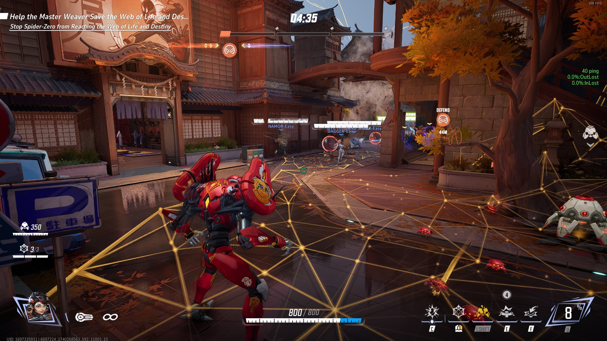

Peni Parker is a vanguard that specializes in holding space and defensive playmaking. With strong mobility options to challenge on high ground or backlines, Peni is surprisingly versatile at dealing with threats of all kinds.
Gameplay Strategy
Peni generally wants to avoid being on the front line, and is ill-suited to holding space as a solo vanguard. Because she lacks abilities that mitigate damage, she instead prefers to hamper enemy movement by denying access to important areas. This generally takes one of two forms: Establishing a safe zone in your own backline, giving your strategists and DPS a safe place to stand and fight from, or holding a flank/side room that forces multiple enemy players to uproot your defensive setup. This second option is riskier as you provide less defensive assistance to your team and you are often cutting yourself off from healing resources. However, the trade-off is that you are a self sufficient nuissance, requiring time and attention from the other team and giving your team the ability to capitalize on the distraction you cause.
Abilities
Bionic Spider-Nest
Peni's Bionic Spider-Nest is the core to her ability to hold space and deny access to the enemy team. Learning to protect your nest while getting value out of your web of influence is where Peni's skill expression is most evident.
Arachno-Mines
Bolstering her ability to hold space is her Arachno-Mines, deployable mines that can be used to deny choke points, blast unwary vanguards, and distress or deter flanking DPS heroes. While these are mostly a defensive tool, throwing a stack of mines into the enemy backline can often lead to a surprise pick onto a strategist.
Cyber-Bond
Cyber-Bond is Peni's mobility tool that allows her to rapidly take space or retreat to the safety of her Bionic Spider-Nest setup. Depending on how effectively you are able to utilize this mobility, Peni players can either be a sitting duck, or an uncatchable nuissance. Notably, this is also one of Peni's abilities that can deploy Cyber-Webs.
Cyber-Web Snare
The flashiest move in your toolkit is the Cyber-Web Snare. This web snare has two uses, both of which are necessary for efficient and impactful gameplay. When hitting a surface, this ability deploys a Cyber-Web. However, you can also hit an enemy player with the Cyber-Web Snare to apply a 0.7 second stun on a short 4 second cooldown. This can be highly disruptive to tanks attempting to take space or retreat, or crippling as a way to stun enemy players out of their ultimate abilities.